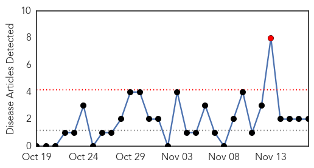
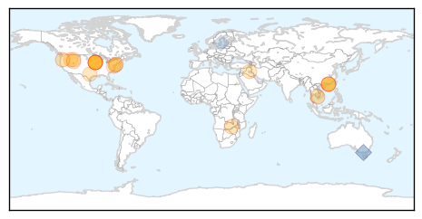

Pertussis
30-Day Web Trend
1 alerts, 0 warnings

30-Day Twitter Trend
0 alerts, 0 warnings

Article Locations
Article Confidences

Top Articles:
Top Tweets:
-
No tweets found for Nov 17, 2015
Influenza
30-Day Web Trend
0 alerts, 0 warnings

30-Day Twitter Trend
4 alerts, 0 warnings

Article Locations
Article Confidences

Top Articles:
- 0.999
- Bird Flu Scare Rattles Battambang and Siem Reap
- 0.999
- Iowa in top 3 of states with influenza activity
- 0.994
- Two men in central Iowa die from the flu
- 0.993
- Cedar Rapids, Iowa News, Sports, and Weather
- 0.972
- Sussex County's first flu case of 2015-16 season confirmed
- 0.948
- Flu Kills Two Iowans – Flu Shot Sill Your Best Defense
- 0.929
- The 4th WHO Informal Consultation for Improving Influenza...
- 0.906
- World Health Organisation vaccine meeting in Hong Kong could prompt changes over flu strains
- 0.897
- News, Weather, Sports, Breaking News
- 0.876
- Zambia National Broadcasting Corporation
- 0.851
- "The 4th WHO Informal Consultation for Improving Influenza Vaccine Virus Selection"
- 0.767
- Women who refused to get flu shots could finally be fired today
- 0.759
- NRDC Mysterious Disease Identified
- 0.751
- November 17, 2015 Archives
- 0.751
- November 17, 2015 Archives
- 0.751
- November 17, 2015 Archives
- 0.751
- November 16, 2015 Archives
- 0.740
- From the Desk of Andy Eads – November 2015
- 0.708
- Two Flu Deaths in Iowa
- 0.626
- The WCA's devastating effect on public health
Top Tweets:
- 0.965
- RT: Influenza A(H1N1)pdm09 (it's a human, not swine influenza) https://t.co/2CeZD8XCJx
- 0.833
- RT: "The flu hospitalizes 200,000 people a year" US vaccine influenza https://t.co/jNDMOcXFsZ via
- 0.819
- Why should influenza be a public health priority? Up to 100 million people infected with flu each season in Europe https://t.co/jhQDWqVMVX
- 0.675
- RT: See seasonal influenza viruses detections by (sub)type on Flu News Europe https://t.co/LLxIgxAhql